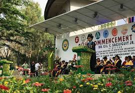
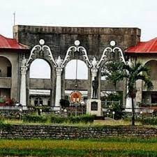

DU@.educ.ph
|  | The story of the Dacanay University of La Union started in 1985. Shaira MAe Dacanay, all esteemed ilokano's, built the La Union Institute, a school which offered primary, secondary, and vocational education. The Institute was renamed to Shaira Mae Junior College after the Second World War, expanded its course offerings and added a Graduate School. In 1950, the school was transformed and became Dacanay University. |
| Dacanay University continued to offer its brand of premier local education in 2019, after its acquisition by Dacanay University. Through Davanay University leadership and management, the college further developed its existing academic programs by employing non-traditional approaches to learning. To date, there are two campuses: in La Union, Through Davanay University, La Union is realizing its goal of providing better quality yet affordable education to more Filipinos. Graduates from Dacanay University continue to excel in board examinations, particularly in Criminology and Education. |  |